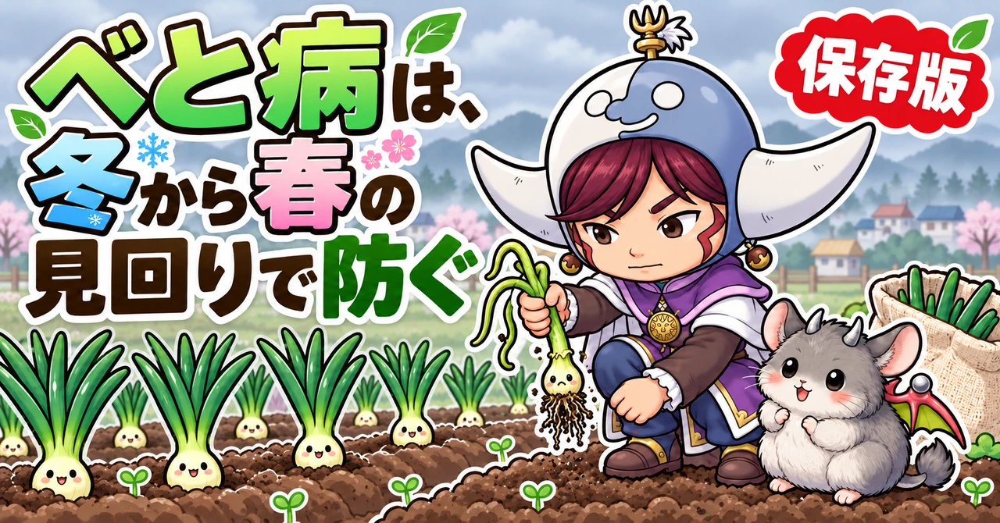
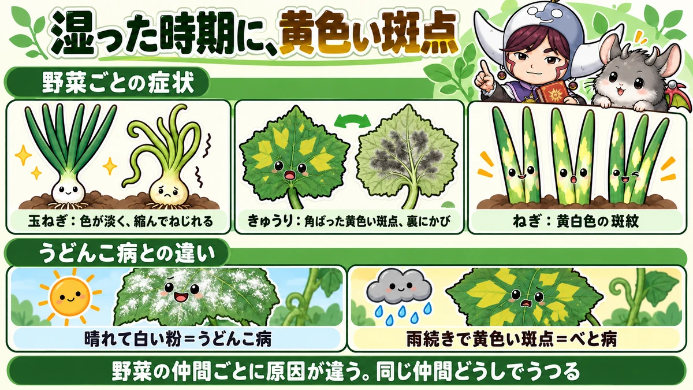
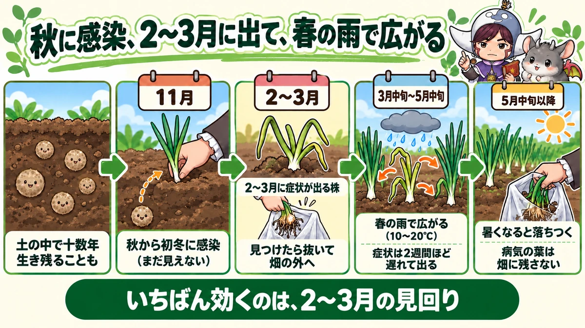
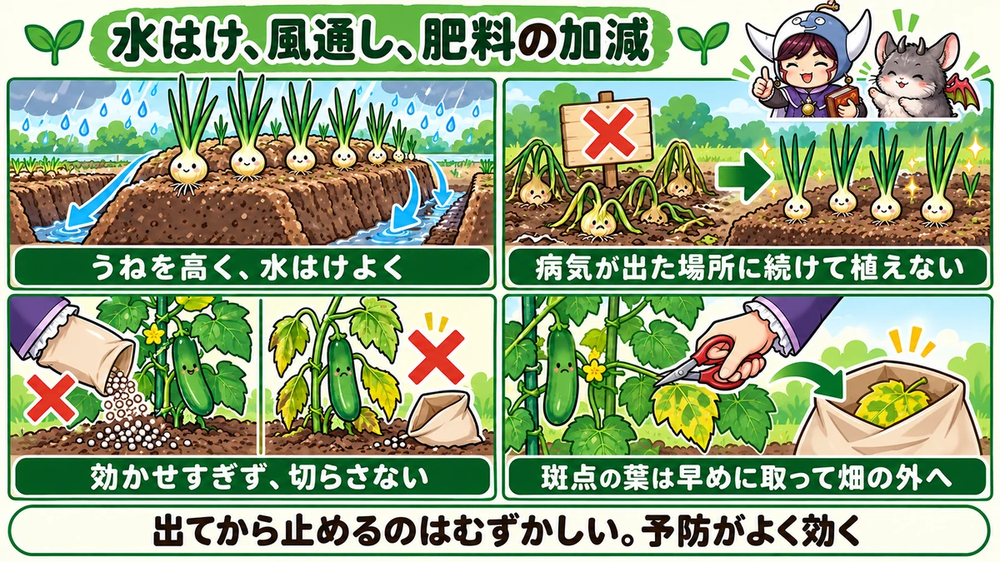

べと病対策の決定版｜玉ねぎは冬から春が勝負、きゅうりは湿気と肥料切れに注意

📖 この記事の目次
この記事で分かること
- べと病は、湿気の多い時期に広がる、かびの仲間による病気です。葉に黄色っぽい斑点が出て、葉の裏などにかびが生え、やがて葉が枯れていきます。
- 玉ねぎ、ねぎ、きゅうり、白菜、ほうれん草など、多くの野菜に出ます。野菜の仲間ごとに、原因になるかびの種類が違います。
- 玉ねぎのべと病は、秋から初冬に、土の中に残っていた病気の元から感染し、2〜3月に症状が出ます。その株から、春の雨のころにまわりへ広がります。
- 玉ねぎの病気の元は、土の中で十数年も生き残ることがあると言われます。病気が出た場所に続けて植えないことが大切です。
- きゅうりのべと病は、葉脈に区切られた角ばった黄色い斑点が目印です。湿気と、肥料切れによる株の弱りが引き金になります。
- 予防は、水はけと風通しをよくすること、肥料を効かせすぎず切らさないこと、病気の株や葉を早く取り除いて畑の外へ出すこと。
- うどんこ病は乾き気味の時期にも広がる白い粉の病気、べと病は湿った時期に広がる黄色い斑点の病気、と覚えておくと見分けやすくなります。
玉ねぎを植えて冬を越し、春になってこれから玉が太るというころに、葉が黄色っぽくなってしおれ、まわりの株にもどんどん広がっていく。梅雨どきのきゅうりの下の葉に、黄色い四角い模様が出て、あっという間に上の葉へ広がっていく。どちらも、べと病でよく見られる光景です。
べと病は、症状が出てから手当てをしても、なかなか止められない病気です。特に玉ねぎは、秋に植えてから翌年の初夏に収穫するまで、半年以上も畑にいます。そのどの時期に何が起きているのかを知らないと、春に症状が出てから慌てることになります。そのかわり、いつ、どこから、どうやって広がるのかが分かっていれば、前もって手を打つことができます。この記事では、べと病の正体から、玉ねぎ、きゅうり、ねぎなど野菜ごとの症状と1年の流れ、薬を使わない予防、見つけたときの手当て、似た症状との見分け方まで、順番に書いていきます。特に、これから植えつけの時期を迎える玉ねぎについて、くわしく書きます。
早見：べと病の基本
見た目
- 玉ねぎ：冬を越した株の葉が、淡い黄緑色になって、やや縮み、ねじれるように曲がる。春には葉に黄白色の大きな斑紋が出て、湿った朝には灰色がかったかびが見える
- きゅうり：下の葉に、葉脈に区切られた角ばった黄色い斑点。葉の裏に、すすのような暗い色のかび
- ねぎ：葉に黄白色の斑紋。先のほうから枯れこむ
出やすい条件
- 雨が続く、湿気が多い、葉がぬれている時間が長い
- 気温は、やや涼しい〜暖かいくらい（玉ねぎは10〜20℃、きゅうりは20〜24℃ほど）
- 水はけが悪い、株が混みあって風通しが悪い
- 肥料の効きすぎで株がやわらかい、または肥料切れで株が弱っている
- 前の年にべと病が出た場所、すぐ近くに病気の株がある
やること
- 前の年にべと病が出た場所には、同じ仲間の野菜を植えない
- うねを高くして水はけをよくする。風通しをよくする
- 肥料は効かせすぎず、切らさない
- 玉ねぎは2〜3月に見回り、症状の出た株は抜いて畑の外へ
- きゅうりなどは、斑点の出た葉を早めに取って畑の外へ
- 収穫のあとの株や葉を、畑に残さない

べと病という病気
かびの仲間による病気
べと病は、かびの仲間（水を好むかびのなかま）が原因の病気です。湿った空気の中で葉の上に胞子を作り、その胞子が風や雨のしずくで運ばれて、新しい葉に感染していきます。
名前のとおり、湿気が多く「べとっ」とした時期に広がりやすい病気です。葉の表面がぬれている時間が長いほど、胞子が芽を出して葉の中に入りこみやすくなります。
野菜の仲間ごとに、かびの種類が違う
べと病は、多くの野菜に出ますが、原因になるかびは、野菜の仲間ごとにだいたい決まっています。
- 玉ねぎ、ねぎ、わけぎなどのねぎの仲間
- きゅうり、メロン、かぼちゃなどのうりの仲間
- 白菜、大根、キャベツ、かぶなどのアブラナの仲間
- ほうれん草、レタスなど
たとえば、きゅうりのべと病が、すぐとなりの玉ねぎにうつる、ということはふつうありません。一方で、玉ねぎとねぎ、わけぎのように、同じ仲間どうしでは、うつりやすいと考えておきます。玉ねぎを植える場所の近くに、べと病の出たねぎやわけぎがあると、そこからうつることがあります。
何が困るのか
葉に斑点が広がると、その部分は光合成ができなくなり、やがて枯れていきます。葉が枯れると、株全体が弱り、収穫量が減ります。
- 玉ねぎ：玉が太る時期に葉が枯れると、玉が大きくならない。病気の株の玉は、保存中に腐りやすくなる
- きゅうり：下の葉から枯れ上がり、実のつきが悪くなる。収穫できる期間が短くなる
- ねぎ：葉が枯れて、見た目が悪くなる
玉ねぎのべと病
玉ねぎは、もともと育てやすい野菜
玉ねぎは、虫の被害が比較的少なく、薬を使わない家庭菜園でも育てやすい野菜です。気をつけたい病気は、春のべと病やさび病などに限られます。だからこそ、べと病の対策を押さえておけば、薬を使わなくても、十分に収穫を楽しめます。
1年の流れを知っておく
玉ねぎのべと病は、1年の中で、感染する時期と、症状が出る時期と、広がる時期がはっきり分かれています。この流れを知っておくことが、対策のいちばんの近道です。
1．土の中で生き残る：前の年にべと病が出た葉や株の中で作られた、殻の厚い胞子が、土の中に残ります。この胞子は長生きで、十数年も休眠しているものもあると言われています。
2．秋から初冬に感染する：玉ねぎの苗を植えたあと、秋から初冬にかけて、土の中の胞子から苗に感染します。このときは、まだ症状は出ません。
3．2〜3月に症状が出る（越年罹病株）：冬を越した株の中で病気が進み、2〜3月を中心に、症状が出てきます。こうした株を「越年罹病株（えつねんりびょうかぶ）」と呼びます。
4．春の雨で広がる（二次感染）：越年罹病株の葉にできた胞子が、風や雨で運ばれ、まわりの株に感染します。気温が10〜20℃で、雨が降って葉がぬれる日に感染しやすく、特に3月中旬〜5月中旬に多くなります。感染してから症状が出るまでは、2週間ほどかかります。
5．5月中旬以降は落ちつく：気温が上がると、病気の勢いは衰えます。ただし、病気の葉の中では、また殻の厚い胞子ができて、土の中に残ります。
越年罹病株の見分け方
2〜3月に出てくる越年罹病株は、次のような姿をしています。
- 葉の色が、まわりの株より淡い黄緑色で、つやがない
- 株全体がやや縮んで、葉がねじれるように曲がっている
- 湿った朝には、葉の表面に、灰色から紫がかったかびが見えることがある
寒さで葉先が枯れている株とは、葉全体の色と、ねじれ方で見分けます。寒さによる傷みは、葉先から茶色く枯れていくのに対し、越年罹病株は、葉全体が淡い色になって縮みます。
2〜3月の見回りの手順
1．晴れた日の昼より、朝の早い時間か、くもりの日に見回ると、葉の色の違いが分かりやすくなります。
2．うねの端から、1株ずつ、葉の色とねじれ方を見ていきます。まわりの株と比べて、明らかに色の淡い株、縮んでねじれた株がないかを探します。
3．気になる株があれば、葉の表面をよく見ます。湿った朝なら、灰色がかったかびが見えることがあります。
4．越年罹病株と分かったら、その場で根ごと抜き、用意しておいた袋に入れます。
5．抜いたあとの穴は、土を戻して平らにしておきます。
6．袋は口をしばって、畑の外へ持ち出して処分します。
2月から3月にかけて、週に1回この見回りを続けます。1回で全部見つけきれなくても、何度か見るうちに、見落としが減っていきます。
越年罹病株は、見つけたら抜く
越年罹病株は、春の間ずっと胞子を作り続け、まわりへの感染の出どころになります。少ない数でも、そこから畑全体に広がることがあります。
- 2〜3月は、週に1回は玉ねぎの株を見回る
- 越年罹病株を見つけたら、根ごと抜く
- 抜いた株は、袋に入れて畑の外へ持ち出して処分する。畑のすみや堆肥の山に置かない
1株抜くのはもったいなく感じますが、その1株が、まわりの何十株への感染の元になります。二次感染が始まる前の、早い時期に抜くことが大切です。
春は、雨のあとに見回る
3月中旬からは、二次感染の時期です。雨の数日あと、2週間ほどあとに、新しい斑点が出ていないか見回ります。葉に黄白色の大きな斑紋が出た株は、病気の葉を取るか、ひどい場合は株ごと抜きます。
雨の多い春は、特に注意
二次感染は、暖かい雨の日に起こりやすくなります。3月に大雨が降り、そのころ気温の高い日が重なった年は、感染に好都合な条件だった、と注意をうながす資料もあります。また、春の気温が平年より高くなる予報が出ている年は、べと病が出やすくなると考えられています。
雨の多い春や、暖かい春は、いつもより見回りの回数を増やし、うね間の溝が詰まっていないか、水がたまっていないかも確かめておきます。
広がってしまったら、早めに収穫
収穫の近い時期に、べと病が広がって葉が次々に枯れてしまった場合は、玉の大きさにこだわらず、早めに収穫するほうがよいこともあります。そのまま置いておくと、玉そのものが傷んで、保存中に腐りやすくなります。
収穫した玉ねぎは、晴れた日に畑で乾かしてから、葉と根を切ります。収穫してすぐに切ると、切り口から出る汁が、かびや腐れの原因になることがあります。

収穫と保存でできること
- 収穫は晴れた日に行う
- 抜いた玉ねぎは、向きをそろえて並べ、畑で2〜3日乾かす。雨の多い時期でも、晴れた日に最低1日は乾かす
- よく乾いてから、葉と根を切る
- べと病が出た株の玉は、傷みやすいので分けておき、先に食べる
- 保存する玉ねぎは、風通しのよい日陰に吊るす
病気の株の玉と元気な株の玉をいっしょに保存すると、傷んだ玉から腐れが広がることがあります。収穫のときに分けておくと、保存の失敗が減ります。
玉ねぎのべと病の予防
植えつけの準備で気をつけること
玉ねぎのべと病の予防は、苗を植える前の土づくりとうね作りから始まります。
- 石灰で土の酸っぱさを整える。ただし、病気よけのつもりで多くまきすぎない
- 堆肥を入れて、水はけと水もちのよい土にする
- 元肥は控えめに。窒素の多い肥料を入れすぎない
- うねは高めに作る。特に、雨のあとに水がたまりやすい畑は高く
- 苗は、植えつけの適期に植える。早すぎると冬までに育ちすぎ、遅すぎると根づく前に寒くなる
- 株と株の間は15cmほどあけ、つめすぎない。春に葉が茂っても風が通るようにする
- マルチを張るか、株元にわらを敷いて、雨の泥はねを防ぐ。泥といっしょに病気の元が葉にはね上がるのを減らせる
1．植える場所を選ぶ
- 前の年や、その前の年に、玉ねぎやねぎ、わけぎでべと病が出た場所には植えない
- べと病の出たねぎやわけぎの近くに植えない
- 日当たりと風通しのよい場所を選ぶ
病気の元は、土の中で長く生き残ります。一度べと病が多く出た場所は、何年か、ねぎの仲間を植えないようにします。
2．うねを高くして、水はけをよくする
玉ねぎのべと病の予防で、いちばん基本になるのが水はけです。
- うねを高めに作る（水がたまりやすい畑では特に）
- うね間の溝を掘って、雨水の逃げ道を作る
- 冬の間に踏み固められたうね間は、春先に軽く掘り起こして、水がしみこみやすくする
3．肥料は控えめに、時期を守って
窒素の多い肥料を効かせすぎると、葉がやわらかく、ひょろひょろと伸び、病気にかかりやすくなります。
- 元肥や追肥の量は守る
- 冬の追肥はごく少なめに
- 追肥の止めどき（止め肥）を守る
4．病気の残さを畑に残さない
収穫のあとの玉ねぎの葉や、病気の株は、畑に残さず、外へ持ち出して処分します。病気の葉を土にすきこむと、その中でできた殻の厚い胞子が、土の中に残り続けます。
5．苗を植えたら、秋から気にかける
感染は、苗を植えたあとの秋から初冬に起こります。植えつけのときから、水はけと風通し、肥料の加減に気を配っておきます。
手づくりの液や、市販の資材
薬を使いたくない人の中には、納豆菌をふやした液や、木酢液を、秋から冬にかけて玉ねぎにかけて、べと病を予防する、という方法を試している人もいます。効き目のほどははっきりしていないので、ここまでに書いた基本の予防と組み合わせて考えてください。
市販の資材には、銅を含む薬など、有機栽培でも使えるものがあります。使う場合は、ラベルに書かれた野菜の名前、使う時期、回数を必ず確かめてください。べと病は、出てからでは抑えにくいので、どの方法も、予防として使うものです。
きゅうりのべと病
症状
- 下のほうの葉から出はじめる
- はじめは、淡い黄色の小さな斑点。広がると、葉脈に区切られた、角ばった黄色い斑点になる
- 斑点がつながって、葉がまだら模様になる
- 湿気が多いと、斑点の裏側に、すすのような暗い色のかびができる
- 古くなっても、斑点に穴があかない
出やすい条件
- 気温が20〜24℃ほどで、湿気が多いとき
- 雨が続く、梅雨どきや、梅雨明けの蒸し暑いころ
- 葉がぬれている時間が長いとき
- 株が混みあって、風通しが悪いとき
- 肥料切れで、株が弱っているとき
- つるの先を止めて、茎や葉が茂り、株の中が蒸れるころ
- 収穫が盛んで、株が疲れてくるころ
予防
- 株間をあけて植え、つるを広げて誘引し、葉が重ならないようにする
- 下の葉、古い葉を整理して、株元に風を通す
- マルチや敷きわらで、雨のはね返りを防ぐ
- 水やりは朝、株元に。葉を夕方までぬらしたままにしない
- 追肥を切らさない。収穫が続く時期は特に
見つけたら
- 斑点の出た葉を、早めに切り取る
- 取った葉は、袋に入れて畑の外へ持ち出す
- 追肥で株の勢いを取り戻す
- まだ初期で、上の葉が元気なら、株全体が枯れるとは限らない。新しく出てくる葉を守る
きゅうりの見回りの手順
1．株元から上へ、下の葉を中心に、葉の表と裏を見ます。
2．黄色い斑点がないか、あれば角ばった形か、裏にすすのようなかびがないかを確かめます。
3．斑点の出た葉は、はさみで葉のつけ根から切り、袋に入れます。
4．黄色くなった古い葉、地面に近い葉も、あわせて整理します。
5．葉の色が全体に薄くなっていないか、実が曲がってきていないかを見て、肥料切れなら追肥をします。
雨の続く時期は、2〜3日に1回くらい見回ると、斑点が少ないうちに気づけます。
ねぎ、白菜、ほうれん草のべと病
ねぎ
ねぎの葉に、黄白色の斑紋が出て、先のほうから枯れこんでいくことがあります。黒っぽい斑点が出ている葉は、根元から切り取ります。ねぎは、まん中から新しい葉が次々に出てくるので、病気の葉を取っても、株が元気なら回復します。
夏の暑さで、古い葉の先が自然に枯れていくのは、病気とは限りません。葉先から一様に枯れているか、途中に斑点があるかで見分けます。
ねぎの仲間は、まとめて気にかける
玉ねぎ、ねぎ、わけぎ、にらなどのねぎの仲間は、べと病の原因になるかびが共通していることがあります。畑の中でねぎの仲間を育てている場所が近い場合は、どれか1つにべと病が出たら、ほかの仲間の株も見回ります。
玉ねぎを植える場所を決めるときは、近くで育てているねぎやわけぎに、病気が出ていないかも確かめておきます。
白菜、大根などアブラナの仲間
秋に雨が多いと、白菜や大根の外葉に、葉脈に区切られた黄色っぽい斑点が出ることがあります。外葉に出たものは、その葉を取り、畑の外へ出します。株のまん中の若い葉が元気なら、育ちを大きく妨げることは少なくなります。
ほうれん草
冷たい雨が続く時期に、葉に黄色っぽい斑点が出て、葉の裏に灰色がかったかびが出ることがあります。株が混みあうと出やすいので、間引きをして風通しをよくします。
秋冬の葉物でも、株元の整理を
秋から冬にかけて育てる葉物やキャベツの仲間でも、株元の枯れた葉や、マルチにはりついた葉を残しておくと、湿気がこもって病気が出やすくなります。下の枯れた葉は、光合成にはほとんど役立っていないので、見回りのたびに整理しておきます。株が混みあっている部分は、外側の葉を少し取って、風を通します。
メロン、かぼちゃ、ゴーヤ
きゅうりと同じうりの仲間なので、きゅうりと同じような角ばった黄色い斑点が出ることがあります。梅雨どきや、雨の多い時期に、下の葉から見回ります。予防と手当ては、きゅうりと同じです。
レタス
涼しく湿った時期に、葉に黄色っぽい斑点が出て、葉の裏にかびが出ることがあります。外側の葉に出たら、その葉をはがして畑の外へ出します。株元の枯れた葉を残さないようにします。
似た症状との見分け方
うどんこ病との違い
- うどんこ病：葉の表に、白い粉をまぶしたような斑点。乾き気味の時期にも広がる。指でこすると粉がつく
- べと病：葉に、黄色っぽい斑点（きゅうりでは葉脈に区切られた角ばった形）。湿気の多い時期に広がる。かびは、主に葉の裏に、すすのような色で出る
同じ「かびの病気」でも、好む天気がまったく違います。晴れが続いて白い粉ならうどんこ病、雨が続いて黄色い斑点ならべと病、と天気と合わせて考えると、見分けやすくなります。
肥料切れ
肥料が切れて葉が黄色くなる場合は、斑点ではなく、葉全体が均一に黄色くなります。また、下の古い葉から順に、まんべんなく色が薄くなっていきます。べと病は、葉の一部に斑点ができて、それが広がっていきます。
寒さや暑さによる葉先の傷み
冬の玉ねぎの葉先が茶色く枯れるのは、寒さによることが多く、葉先から枯れていきます。夏のねぎの葉先が枯れるのは、暑さによることもあります。べと病は、葉全体の色が淡くなる、葉の途中に斑紋や斑点ができる、という違いがあります。
玉ねぎのさび病
玉ねぎやねぎの葉に、オレンジ色の小さな盛り上がった斑点ができ、さわると粉がつくのは、さび病です。べと病と同じく春に出やすく、いっしょに出ることもあります。べと病は黄白色の斑紋と灰色がかったかび、さび病はオレンジ色の粉、と色で見分けます。どちらも、水はけと風通し、肥料の加減で予防するのは同じです。
玉ねぎの春の腐れ（細菌の病気）
春、それまで元気だった玉ねぎが急に元気をなくし、最後はいやなにおいを出して腐ってしまうことがあります。これは、細菌による病気で、べと病とは別のものです。3〜5月の、気温15℃前後で雨が続く時期に出やすく、雨の泥はねで傷口から細菌が入りこみます。
べと病と同じく、水はけをよくし、泥はねを防ぐことが予防になります。腐った株は、まわりに広げないよう、早めに抜いて畑の外へ出します。
ほかの病気
きゅうりには、べと病と似た斑点の出る病気がほかにもあります。斑点が古くなって穴があく、斑点に白っぽい菌のかたまりが見える、といった場合は、べと病以外の病気のことがあります。べと病は、古くなっても穴があかず、葉の裏にすすのようなかびが出るのが特徴です。

季節ごとにやること（一般的な地域の目安）
玉ねぎ
- 9〜10月：植える場所を決める。前にべと病が出た場所は避ける。うねを高く
- 11月：苗を植える。肥料は控えめに。水はけを確かめる
- 12〜1月：冬の追肥はごく少なめに。うね間の水はけを保つ
- 2〜3月：越年罹病株の見回り。見つけたら抜いて畑の外へ。うね間を軽く掘って水はけを回復
- 3月中旬〜5月中旬：二次感染の時期。雨の数日後、2週間ほど後に見回る。病気の葉や株を取る
- 5〜6月：広がった場合は早めに収穫。収穫のあとの葉や株を畑に残さない
白菜、大根など秋冬の野菜
- 植えつけ：株間をあけ、水はけのよいうねに
- 秋の長雨のころ：外葉の斑点を見回り、出た葉は取って畑の外へ
- 株元の枯れた葉は、見回りのたびに整理する
きゅうりなど夏の野菜
- 植えつけ：株間をあけ、マルチや敷きわら
- 梅雨〜梅雨明け：下の葉の見回り。斑点の葉は早めに取る。追肥を切らさない
- 収穫の最盛期：株が疲れるころ。追肥と下葉の整理
- 片づけ：病気の葉や株を畑に残さない
説明が分かれるところ
病気の株は抜くか、葉だけ取るか
玉ねぎの越年罹病株は、胞子を作り続けるので、抜いて畑の外へ出すのが基本です。一方、春の二次感染で一部の葉に斑紋が出た程度なら、その葉だけを取って様子を見る、という考え方もあります。病気が広がる時期の前は「抜く」、収穫が近い時期は「病気の葉を取って早めに収穫」と、時期で考えるのが現実的です。
手づくりの液は効くか
納豆菌の液や木酢液などを予防にかける方法は、「効果があった」という声がある一方、はっきり確かめられたものではありません。水はけ、植える場所、肥料、病気の株を取り除く、という基本の予防が先です。手づくりの液を使う場合は、それに加える形で考えてください。
重曹の液をかけるか
きゅうりなどで、べと病の広がりを抑えようと、うすめた重曹の液をかける人もいます。重曹は、うどんこ病の手当てに使われることの多い資材で、べと病にどのくらい効くかは、はっきりしていません。かけるとしても、病気の葉を取る、風通しをよくする、追肥で株を元気にする、という基本の手当てといっしょに行います。
草木灰や石灰をまくか
アルカリ性の草木灰や石灰をまいて、病原菌を抑える、という考え方もあります。一方で、石灰をまきすぎると土がアルカリ性に傾きすぎ、根を傷めたり、養分の吸収が悪くなったりします。土の酸っぱさを整える目的の量を守り、病気よけのためにまきすぎないようにします。
よくある失敗
越年罹病株を「寒さのせい」と思って放っておいた
2〜3月に、葉が淡い色になって縮んでいる株は、べと病のことがあります。放っておくと、春にまわりへ広げる元になります。
毎年、同じ場所に玉ねぎを植えた
病気の元は土の中に長く残ります。べと病が出た場所には、何年かねぎの仲間を植えないようにします。
病気の葉を、うね間に捨てた
取った葉からも胞子が飛び、土の中に病気の元が残ります。袋に入れて畑の外へ出します。
肥料で元気にしようとして、窒素を効かせすぎた
葉がやわらかくなり、かえって病気にかかりやすくなります。量と時期を守ります。
きゅうりの追肥を切らした
肥料切れで株が弱ると、べと病が広がりやすくなります。収穫が続く時期は、追肥を切らさないようにします。
よくある質問
越年罹病株を1株見つけたら、まわりの株も抜きますか
まわりの株まで抜く必要はありません。まわりの株は、葉の色やねじれを確かめて、同じ症状がなければ残します。ただし、見つけた株のまわりは、しばらくの間、特に念入りに見回ります。
去年べと病が出た畑しか、植える場所がありません
できるだけ、病気の出た場所から離れた場所を選びます。それもむずかしい場合は、次のことを組み合わせて、病気の出る条件を減らします。
- うねをいつもより高くして、水はけをよくする
- 夏の暑い時期に、土に透明のマルチをかぶせて温める太陽熱消毒をしておく
- 肥料を控えめにして、株をやわらかく育てない
- 2〜3月の見回りを、いつもより念入りにする
- プランターで別の土を使って育てる
病気の葉を取りすぎると、株が弱りませんか
一度にたくさんの葉を取ると、株が弱ります。斑点の出た葉と、古く枯れかけた葉を中心に取り、上のほうの元気な葉は残します。広がっている場合は、数日に分けて少しずつ取ります。葉を取ったあとは、追肥をして、新しい葉が出るのを助けます。
べと病が出た場所には、何年あければいいですか
玉ねぎのべと病の元は、土の中で十数年も休眠しているものがあると言われるので、「何年あければ安心」とは言いきれません。できるだけ長く、ねぎの仲間以外の野菜を育てる場所にします。家庭菜園で場所が限られる場合は、病気の出た場所の中でも、水はけのよいところを選び、うねを高くし、2〜3月の見回りを念入りにする、という組み合わせで備えます。
べと病の玉ねぎは食べられますか
食べられます。ただ、病気の株の玉は傷みやすく、保存中に腐ることがあるので、長く保存せず、早めに食べるようにします。
買ってきた苗は大丈夫ですか
苗を選ぶときは、葉の色が濃い緑で、つやがあり、ねじれや斑点のないものを選びます。植えたあとは、2〜3月の見回りで、越年罹病株がないかを確かめます。
玉ねぎの苗を自分で育てています。気をつけることは
苗床でも、秋のうちに土の中の病気の元から感染することがあります。苗床は、前にべと病の出た場所やねぎの仲間を育てていた場所を避け、水はけのよいところに作ります。苗が混みあうと風通しが悪くなるので、間引きをして株の間をあけます。植えつけのときは、色が淡い苗、ねじれた苗、斑点のある苗は使わないようにします。
わけぎやにらにも出ますか
わけぎ、にら、らっきょうなどのねぎの仲間にも、べと病が出ることがあります。玉ねぎの近くで育てている場合は、いっしょに見回り、葉に淡い色の斑紋や、湿った朝のかびがないかを確かめます。
プランターでも出ますか
出ます。プランターは、受け皿に水がたまっていたり、壁ぎわで風通しが悪かったりすると、湿気がこもりやすくなります。受け皿の水を捨て、プランターどうしの間をあけて、風を通します。前にべと病が出たプランターの土は、同じ仲間の野菜には使わないようにします。
冬の間にできることはありますか
冬は、玉ねぎのべと病の症状がまだ表に出ていない時期です。この間に、うね間の溝を掘り直して水はけを保つ、冬の追肥をごく少なめにする、株元の雑草を取って風通しをよくする、といった手入れをしておくと、春の広がりを抑えることにつながります。
雨よけをすれば防げますか
雨が直接葉に当たらないようにすると、葉がぬれる時間が短くなり、べと病は出にくくなります。トマトやきゅうりで雨よけの屋根をかける人もいます。ただし、雨よけの下はアブラムシが増えやすいなど、別の注意も出てくるので、見回りは続けます。
学ぶ：べと病のしくみ🔬
なぜ、湿気が多いと広がるのか
べと病のかびは、葉の表面に水があるときに、胞子が芽を出して、葉の気孔などから中に入りこみます。葉がぬれている時間が長いほど、感染の機会が増えます。また、葉の中で育ったかびは、湿った夜から朝にかけて、葉の外へ胞子を作る枝を伸ばし、新しい胞子をたくさん作ります。雨が続くと、この「感染」と「胞子づくり」の両方が進み、一気に広がるのです。
なぜ、2週間遅れて症状が出るのか
かびの胞子が葉に入りこんでから、葉の中で増えて、目に見える斑点や斑紋になるまでには、時間がかかります。玉ねぎのべと病では、感染してから症状が出るまでに、2週間ほどかかると言われています。
つまり、雨の日に感染していても、その日には何も見えません。2週間ほどたってから、急に斑紋が出てくるのです。春の見回りで「雨の2週間ほどあと」を意識するのは、このためです。症状が見えたときには、すでに次の感染が起きているかもしれない、という前提で、早めに病気の葉や株を取り除きます。
なぜ、土の中で何年も生き残れるのか
べと病のかびは、病気になった葉の中で、2つの性質の違う胞子を作ります。1つは、風に乗って次々に広がるための、薄い殻の胞子。もう1つは、厳しい環境を生き抜くための、厚い殻に守られた胞子です。厚い殻の胞子は、乾燥や寒さに強く、土の中で長い間休眠して、そばに同じ仲間の野菜が植えられるのを待ちます。玉ねぎのべと病が、病気の出た場所に続けて植えると出やすいのは、このためです。
なぜ、5月中旬を過ぎると落ちつくのか
玉ねぎのべと病のかびが新しく感染できるのは、気温が10〜20℃ほどの、やや涼しい湿った時期です。5月中旬を過ぎて気温が上がってくると、かびにとっては暑すぎるようになり、新しい感染が起こりにくくなります。そのため、病気の勢いは自然に衰えていきます。
ただし、それまでに病気になった葉の中では、土の中で生き残るための殻の厚い胞子ができています。勢いが落ちついたからといって安心せず、収穫のあとに病気の葉や株を畑から持ち出すことが、次の年への備えになります。
なぜ、肥料が多すぎても少なすぎてもいけないのか
窒素が多すぎると、葉は大きくやわらかく育ち、表面の守りが十分にできあがりません。葉が茂って風通しも悪くなり、湿気がこもります。反対に、肥料が切れると、株は弱り、病気に抵抗する力が落ちます。きゅうりで「肥料切れで株が弱るとべと病が出やすい」と言われるのは、このためです。どちらにも傾けず、株を元気に、でも茂りすぎずに育てることが、病気の予防になります。
まとめ
ここまで読んでくださって、ありがとうございます！
べと病対策のポイントを、もう一度まとめておきます。
- べと病は、湿気の多い時期に広がるかびの仲間の病気。葉に黄色っぽい斑点ができ、枯れていく
- 野菜の仲間ごとに原因のかびが違う。同じ仲間どうしではうつりやすい
- 玉ねぎは、秋から初冬に土から感染し、2〜3月に越年罹病株として症状が出る。春の雨で広がる
- 越年罹病株は、葉が淡い黄緑色で縮み、ねじれる。見つけたら抜いて畑の外へ
- 病気の元は土の中で十数年生き残ることがある。病気が出た場所には続けて植えない
- うねを高く、水はけと風通しをよく。肥料は効かせすぎず、切らさない
- きゅうりは、葉脈に区切られた角ばった黄色い斑点。斑点の葉は早めに取り、追肥を切らさない
- 取った葉や株、収穫のあとの残さは、畑に残さない
- 晴れが続いて白い粉ならうどんこ病、雨が続いて黄色い斑点ならべと病
- 玉ねぎは株間15cmほど、マルチやわらで泥はねを防ぐ。さび病や春の腐れとも見分ける
- 春は「雨の2週間ほどあと」に見回る。症状は感染から遅れて出る
べと病は、出てから止めるのがむずかしいぶん、予防がよく効く病気です。水はけ、植える場所、肥料の加減、そして2〜3月の見回り。この4つを続けるだけで、春の玉ねぎ畑の様子は大きく変わります。これから玉ねぎを植える方は、まず植える場所の水はけと、去年の様子を思い出すところから始めてみてください🧅
敷きわら
株元に敷いて、雨の泥はねを防ぎます。泥といっしょに病気の元が葉にはね上がるのを減らせます。
![[商品価格に関しましては、リンクが作成された時点と現時点で情報が変更されている場合がございます。]](https://hbb.afl.rakuten.co.jp/hgb/56bc2fb2.ff40a6e6.56bc2fb3.618f6a70/?me_id=1257026&item_id=10000211&pc=https%3A%2F%2Fthumbnail.image.rakuten.co.jp%2F%400_mall%2Fsharuka%2Fcabinet%2F09042254%2Fimgrc0081094692.jpg%3F_ex%3D240x240&s=240x240&t=picttext "[商品価格に関しましては、リンクが作成された時点と現時点で情報が変更されている場合がございます。]")

園芸ばさみ
斑点の出た葉は、はさみで葉のつけ根から切り取り、袋に入れて畑の外へ出します。
![[商品価格に関しましては、リンクが作成された時点と現時点で情報が変更されている場合がございます。]](https://hbb.afl.rakuten.co.jp/hgb/56d22030.def85fa7.56d22031.b89fde86/?me_id=1250472&item_id=10022339&pc=https%3A%2F%2Fthumbnail.image.rakuten.co.jp%2F%400_mall%2Fplantz%2Fcabinet%2F01%2Ft-13.jpg%3F_ex%3D240x240&s=240x240&t=picttext "[商品価格に関しましては、リンクが作成された時点と現時点で情報が変更されている場合がございます。]")
穴あき黒マルチ（15cm間隔）
玉ねぎの植えつけに。泥はねを防ぎ、株間もそろえやすくなります。
![[商品価格に関しましては、リンクが作成された時点と現時点で情報が変更されている場合がございます。]](https://hbb.afl.rakuten.co.jp/hgb/55521906.a3595d78.55521907.92994d18/?me_id=1225177&item_id=10035007&pc=https%3A%2F%2Fthumbnail.image.rakuten.co.jp%2F%400_mall%2Fssn%2Fcabinet%2F02584092%2F07223762%2F4980356008386_1.jpg%3F_ex%3D240x240&s=240x240&t=picttext "[商品価格に関しましては、リンクが作成された時点と現時点で情報が変更されている場合がございます。]")
あわせて読みたい


次に読む
記事一覧へ